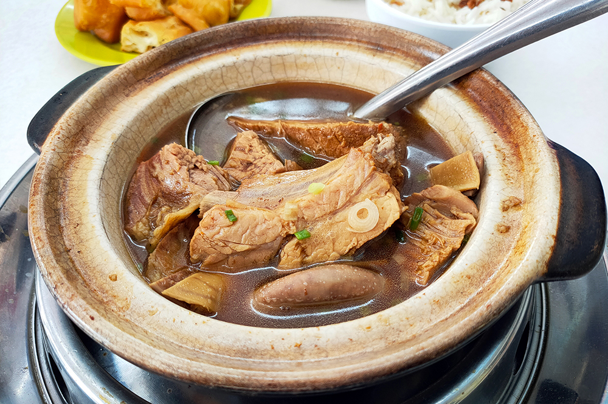
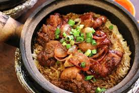
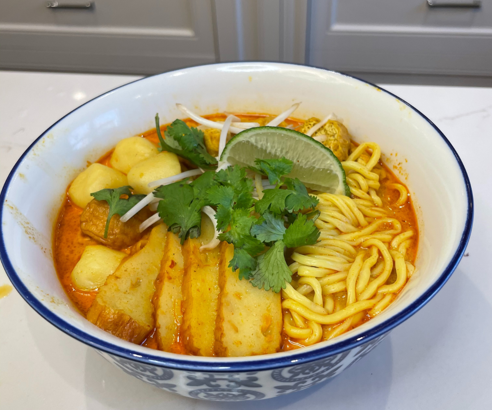

Exploring Chinese Cuisines
Discover the Rich Flavors of Chinese Food
The popularity of Chinese food in Malaysia is comparable. Predicated on a variety of dishes with influences from the cuisines of Fujian, Cantonese, Hakka and Teochew. These Chinese cooking techniques changed throughout time to incorporate regional flavors into their meals.

Bak Kut Teh
Bak Kut Teh is a type of soup dish with rib meat cooked in traditional Chinese herbs from mainland China.
Herbs and ginseng are mixed not only as seasonings but also to add nutrients.
Different types of mushrooms are often added to the dish and are usually served in Chinese pottery bowls.
Nowadays there are sacks of Bak Kut Tea, which contain all the necessary ingredients.

Claypot Chicken Rice
Seasoned rice is cooked in a claypot with secondary ingredients, and finished with soy sauce.
Lightly sweet and savoury, this chicken rice is traditionally cooked with charcoal fire.
Typical additions include salted fish and lap cheong (sweet Chinese pork sausage) to add more flavour and depth to the dish,
although customers are free to pick and choose their accompaniments. As most places still use the traditional charcoal fire to cook,
a wait time is normally expected when indulging in this particular Malaysian Chinese dish

Curry Laksa
Curry Laksa (Curry Mee) is one of the signature dishes of the Malaysian Chinese community.
It comes in various versions from mild to spicy with different toppings, depending on region.
The common theme is the coconut milk base curried soup with noodles.
This dish is simply known as curry mee in the northern part of Malaysia.

Char Kway Teow
Char kway teow is a stir-fried rice noodle dish from Maritime Southeast Asia of southern Chinese origin.
In Hokkien, char means 'stir-fried' and kway teow refers to flat rice noodles. It is made from flat rice noodles or kway teow.
Char kway teow is a popular, inexpensive dish usually eaten for breakfast and sold at food stalls.
Stir-fried over very high heat with garlic, light and dark soy sauce, chili paste, whole prawns, shelled blood cockles,
chopped Chinese chives, slices of Chinese sausage and bean sprouts. Other common ingredients include fishcake and belachan.